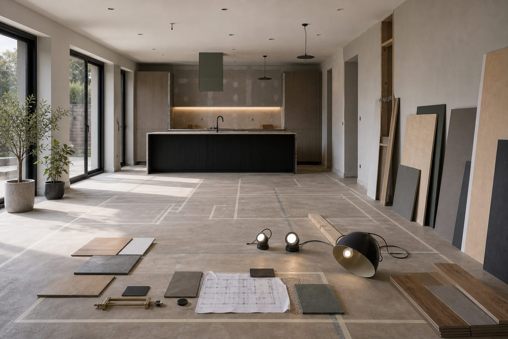
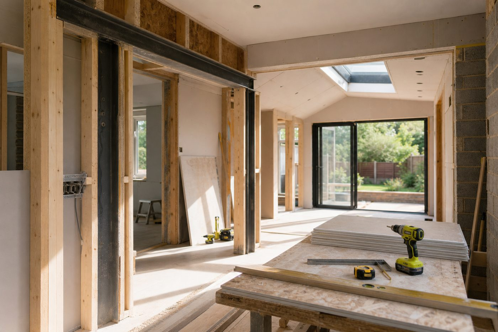
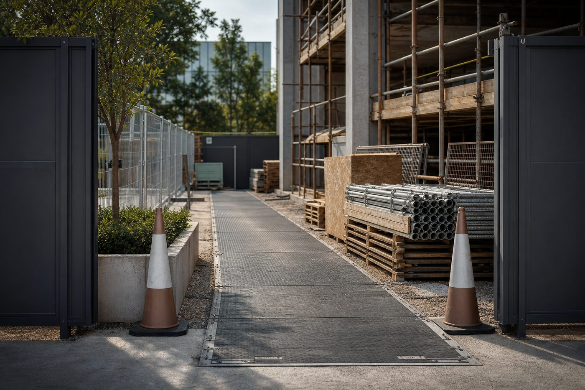

Real Estate & Letting Readiness
Support for properties being prepared for tenants, owners, lease use, sale, occupation or continued asset operation.
AATS Construction and Development Ltd supports property owners, landlords and occupiers with real estate readiness, domestic building work, completion, finishing and specialist construction activity.
AATS is presented around the full property journey: real estate readiness, owned or leased asset support, domestic building, finishing, handover and practical improvements that make spaces usable.

Support for properties being prepared for tenants, owners, lease use, sale, occupation or continued asset operation.

Support for house builds, home improvements, residential alterations and development preparation where domestic construction standards matter.

Organised finishing activity for built spaces, including surfaces, snagging, internal completion and final presentation before use or letting.
Construction tasks that need careful planning, access control, sequencing and coordination with other contractors or property stakeholders.
AATS is framed around the full property journey: understanding the asset, improving the space, completing the finish and helping owned or leased property become ready for tenants, occupiers or long-term use.
Send the property type, location, current condition, intended use, timing and any drawings or photos you already have.